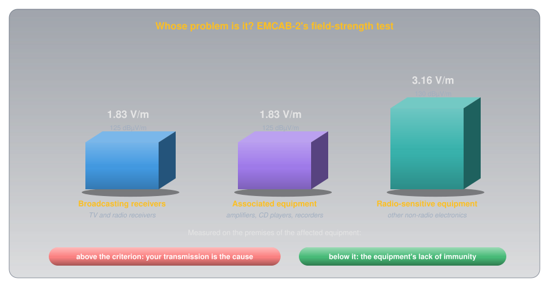

Antennas and Neighbours: Siting, RF Exposure, and Interference🔗
Beginner
This article is in the Getting Licensed topic, after Who Enforces the Rules. Covers Basic exam section B-001 (Regulations and Policies), topics B-001-023, B-001-024, and B-001-025.
An antenna is the part of a station the neighbours can see. A tower in the backyard, a wire between two trees, a mast on the roof: each one touches people who never agreed to share a hobby. Canada has three documents for that boundary: one for putting the antenna up, one for the radio energy it puts into the people around it, and one for the electronics it upsets.
Two ideas tie them together:
- Antennas are federal, but you still consult. The Minister, not the town, has authority over antenna systems. ISED's procedure still makes you talk to the local land-use authority and the public before anything big goes up.
- Your fields don't stop at the property line. Health Canada's Safety Code 6 limits the radio frequency (RF) energy people may be exposed to, and EMCAB-2 decides, by measuring field strength, whether a neighbour's interference problem is your transmitter's fault or their equipment's.
The sources are CPC-2-0-03 (Issue 6, July 2022), Safety Code 6 (2015), and EMCAB-2 (Issue 1, June 1994), each checked as the current issue on October 8, 2026.
Idea One: Federal Authority, Local Consultation🔗
Antennas fall under the Radiocommunication Act, whose section 5(1)(f) lets the Minister "approve each site on which radio apparatus, including antenna systems, may be located" and, as CPC-2-0-03 puts it, "approve the erection of all masts, towers and other antenna-supporting structures." So the authority over amateur antennas and towers is federal, held by the Minister of Innovation, Science and Industry. The land-use authority is consulted, but when a dispute can't be settled, ISED makes the final decision.
That authority comes with a procedure. RBR-4 section 12 says amateurs "are responsible for complying with Client Procedures Circular CPC-2-0-03, Radiocommunication and Broadcasting Antenna Systems." The circular applies to everyone, "including for amateur radio operation and over-the-air TV reception."
![A decision tree from CPC-2-0-03. A proposed new or modified antenna system is either excluded under section 6 (new and under 15 metres, a cumulative height increase of 25 percent or less, or temporary), in which case no consultation is needed, or it is not, in which case you contact the land-use authority. If the authority has a process, you follow it and it decides how consultation takes place; if it has none, you follow ISED's default process. If a stakeholder other than the general public reaches an impasse with you, ISED makes the final decision. Either way, Safety Code 6, EMCAB-2 and the other general requirements always apply.](../images/antennas_and_neighbours/siting_process.svg)
Exclusions🔗
Section 6 of CPC-2-0-03 excludes some proposals from consultation with the land-use authority and the public:
- New antenna systems "where the height is less than 15 metres above ground level." Height runs from the lowest ground level at the base to the tallest point, lightning rod included, and adding soil to shorten the measurement doesn't count.
- Changes to existing systems where "the total cumulative height increase is no greater than 25% of the height of the initial antenna system installation."
- Temporary systems for special events or emergencies, removed "within three months after the start of the emergency or special event."
- Maintenance, which never needs consultation.
An exclusion isn't a blanket permission. The circular says "it may be prudent for the proponent to consult even though the proposal meets an exclusion," considering the antenna's size compared with its surroundings and how close it is to neighbours. And "all proponents must satisfy the general requirements outlined in section 7 regardless of whether an exclusion applies": Safety Code 6 and EMCAB-2 among them.
When You Must Consult🔗
If your proposal isn't excluded, "proponents must always contact the applicable land-use authorities to determine the local consultation requirements." What happens next depends on the land-use authority, usually a municipality:
- If it has its own process, you follow it. The land-use authority decides how public consultation takes place, and its process can also exclude proposals beyond ISED's list.
- If it doesn't, you follow ISED's default process.
![ISED's default public consultation under section 4.2 of CPC-2-0-03. A tower of height h sits at the centre of a notification circle with a radius of three times the tower height; homes inside are notified by mail or by hand, homes outside are not. Three steps: notify the public, the land-use authority and ISED, allowing at least 30 days for written comments; acknowledge concerns within 14 days and address reasonable and relevant concerns in writing within 60 days; the public then has 21 days to reply, and copies go to ISED.](../images/antennas_and_neighbours/default_process.svg)
The default process has three steps, all in writing:
- Notify. Send a notification package by mail or hand delivery to everyone "located within a radius of three times the tower height," and to the land-use authority and ISED. The notice must allow "at least 30 days for written public comment." A system of 30 metres or more also needs a newspaper notice.
- Respond. Acknowledge each question or concern in writing within 14 days, then "address in writing all reasonable and relevant concerns within 60 days of receipt," or explain why a concern isn't reasonable or relevant. You may also phone people or hold a meeting, but public meetings aren't a required element.
- Reply. The public then has 21 days to reply to your response, and copies of the replies go to ISED.
What counts as reasonable and relevant is spelled out. Questions about why you can't share an existing structure, how the antenna fits its surroundings, and how you comply with Safety Code 6 are relevant. Effects on "property values or municipal taxes," and arguments that Safety Code 6 or the Act itself should be reformed, are not.
If you and a stakeholder other than the general public, such as the land-use authority, reach an impasse, either may ask ISED to step in. ISED will "make a final decision on the issue(s) in question," or suggest another dispute-resolution route, after which either party may still ask ISED to decide.
Idea Two: Your Fields Beyond the Property Line🔗
Even an excluded antenna has to meet two technical tests: one for people, one for equipment.
RF Exposure: Safety Code 6🔗
Health Canada publishes Safety Code 6, Limits of Human Exposure to Radiofrequency Electromagnetic Energy in the Frequency Range from 3 kHz to 300 GHz. Its purpose is "to specify maximum levels of human exposure to RF fields at frequencies between 3 kHz and 300 GHz, to prevent adverse human health effects in both controlled and uncontrolled environments." ISED adopted it for protecting the public (CPC-2-0-03 section 7.1), and it's the operator's responsibility "to ensure that all radiocommunication and broadcasting installations comply with Safety Code 6 at all times."
- Two kinds of place. A controlled environment is one where the fields have been measured or calculated and the people exposed know about it and how to reduce it, like a trained worker at a transmitter site. Everywhere else is an uncontrolled environment, with lower limits. Your neighbour's yard is uncontrolled.
- Two established effects. The code says "the only established adverse health effects" are "tissue heating and nerve stimulation (NS)" from short-term exposure. Nerve stimulation matters at lower frequencies, below about 10 MHz; heating matters from 100 kHz upward.
- Limits on the field, not the transmitter. The limits are field strength, power density, and specific absorption rate (SAR) at the person, "independent of the source of RF energy." Safety Code 6 doesn't give a maximum power for a handheld or any other radio. No transmitter is exempt, handhelds included; for a device used within 0.2 metres of the body, compliance is measured as SAR.
![A graph of the Safety Code 6 electric-field reference level for uncontrolled environments, from 20 megahertz to 6 gigahertz on a logarithmic scale. The limit falls from about 27 volts per metre at 20 megahertz to a flat minimum of 22.06 volts per metre from 48 to 300 megahertz, highlighted as the lowest limit, then rises to about 61 volts per metre at 6 gigahertz. Amateur bands are marked: 10 metres, 6 metres, 2 metres, 1.25 metres, 70 centimetres and 33 centimetres; 6, 2 and 1.25 metres fall in the lowest-limit range.](../images/antennas_and_neighbours/sc6_curve.svg)
The limit isn't the same at every frequency. In Safety Code 6's table of reference levels for uncontrolled environments, the electric-field limit bottoms out at a flat 22.06 volts per metre from 48 to 300 MHz, and rises on either side. That range includes the 6-metre, 2-metre, and 1.25-metre amateur bands, so it's where the code is strictest and where you should be most careful about antennas near people.
On the exam: why 48 to 300 MHz
The question bank's reason for the low limit is that "the human body absorbs RF energy the most in this range." Safety Code 6 sets the lower limit but doesn't state the reason in its text. The usual physics explanation is resonance: an adult human body is close to a resonant length for wavelengths of a few metres, so it absorbs energy from them most efficiently. Learn the bank's answer.
Interference Complaints: EMCAB-2🔗
When a neighbour's stereo buzzes in time with your speech, whose problem is it? ISED's answer is EMCAB-2, Criteria for Resolution of Immunity Complaints Involving Fundamental Emissions of Radiocommunications Transmitters. It deals with your intended signal, not spurious emissions, and it measures the field strength "on the premises of the affected equipment."

EMCAB-2 sorts equipment into three categories:
- Broadcasting receivers: equipment for receiving broadcast radio and television.
- Associated equipment: devices "often, or sometimes exclusively, used in association with radio apparatus, typically forming part of a multipurpose home entertainment system," such as audio amplifiers, recorders, and disc players. They're not radio apparatus themselves, but they get the same criterion as the receivers they plug into.
- Radio-sensitive equipment: under the Act, "any device, machinery or equipment, other than radio apparatus, the use or functioning of which is or can be adversely affected by radiocommunication emissions." The question bank puts a garage door opener here.
The rule is one sentence each way: "If the level of the transmitted signal exceeds the applicable field strength value on the premises of the affected equipment, it will be deemed that the transmission is the cause of the problem. If the field strength is less than the applicable value, the affected equipment's lack of immunity will be judged the cause." The criteria don't apply to AM, FM, or TV broadcasting transmitters, which have rules of their own.
In practice, the fix is usually filtering. EMCAB-2 notes that RF most often gets in "through conduction along the signal, control and power leads which act as antennas," and that "the most effective means to resolve immunity problems is often the introduction of filtering at the input ports of the affected device."
Common Misconceptions🔗
- "The town decides whether I can have a tower." The Minister has the authority; the town runs the consultation, if it has a process.
- "Under 15 metres, nothing applies." Consultation doesn't, but Safety Code 6 and EMCAB-2 always do.
- "A neighbour's worry about property values must be answered." It isn't a reasonable and relevant concern under CPC-2-0-03.
- "Handhelds are too small for Safety Code 6." No transmitter is exempt.
- "If my signal upsets their TV, it's always my fault." Only if the field on their premises exceeds the EMCAB-2 criterion.
Practice🔗
1. A 12-Metre Mast
You plan a new 12-metre antenna mast in your backyard. Must you consult the land-use authority and the public?
Solution
Not under ISED's criteria: it's a new system under 15 metres (CPC-2-0-03 section 6). It may still be prudent to talk to the neighbours, and Safety Code 6 and EMCAB-2 still apply.
2. No Local Process
You plan a 20-metre tower, and your municipality has no antenna consultation process. What do you do?
Solution
Follow ISED's default public consultation process: notify everyone within 60 metres (three times the height), allow at least 30 days for written comments, and address reasonable and relevant concerns in writing.
3. Deadlock
You and the land-use authority can't agree about your tower. Who decides?
Solution
ISED, on a written request for its intervention (CPC-2-0-03 dispute resolution).
4. The Strictest Range
In which frequency range does Safety Code 6 set the lowest exposure limits?
Solution
48 to 300 MHz, where the uncontrolled-environment electric-field reference level is a flat 22.06 V/m.
5. The Stereo
Your neighbour's stereo malfunctions when you transmit. ISED measures 1.2 V/m at their home. Whose problem is it under EMCAB-2?
Solution
The stereo's. It's associated equipment with a criterion of 1.83 V/m; below that, the equipment's lack of immunity is judged the cause.
6. The Garage Door
In EMCAB-2 terms, what category is a garage door opener, according to the question bank?
Solution
Radio-sensitive equipment, with a criterion of 3.16 V/m.
Quick Recap🔗
-
Federal authority
The Minister of Innovation, Science and Industry approves antenna sites and structures. RBR-4 section 12 requires amateurs to follow CPC-2-0-03.
-
Exclusions
New and under 15 m; a cumulative rise of 25% or less; temporary for up to three months; maintenance. General requirements still apply.
-
Consultation
Contact the land-use authority. Follow its process if it has one; otherwise ISED's default: notify within three times the height, 30 days for written comments, respond in writing.
-
Disputes
Reasonable and relevant concerns only; property values don't count. At an impasse, ISED decides.
-
Safety Code 6
Health Canada's RF exposure limits, 3 kHz to 300 GHz; controlled and uncontrolled environments; heating and nerve stimulation; lowest limits 48–300 MHz; no transmitter exempt.
-
EMCAB-2
Field strength on the affected premises: 1.83 V/m for receivers and associated equipment, 3.16 V/m for radio-sensitive equipment. Above: your transmission. Below: their immunity.
-
On the exam
You can't erect any antenna without regard to neighbours or the land-use authority. Exclusions are ISED's or the land-use authority's. The land-use authority decides how its own consultation works. Public meetings aren't a required element. Safety Code 6 is Health Canada's; it sets limits on exposure, not on power fed to antennas; handhelds aren't excluded and no maximum handheld power is specified. Nerve stimulation is the second effect besides heating.
What's Next🔗
That completes the regulations on the Basic exam. Getting Licensed maps every article in this topic, and The Amateur's Code covers the conduct that keeps good relations with the neighbours and on the air.
Further Reading🔗
Regulations and Standards
- CPC-2-0-03: Radiocommunication and Broadcasting Antenna Systems — Issue 6, July 2022: exclusions (section 6), consultation (section 4), general requirements (section 7)
- Safety Code 6 (2015) — Health Canada's RF exposure limits
- Electromagnetic Compatibility Advisory Bulletins — ISED's index, including EMCAB-2
- RBR-4 — section 12, which makes CPC-2-0-03 binding on amateurs
Related Articles
- Who Enforces the Rules: Authority, Inspectors, and Penalties — the Minister's powers behind these documents
- What You May Say: Content, Control, and Emergencies — harmful interference between radio services
- The Amateur's Code — being a good neighbour on the air